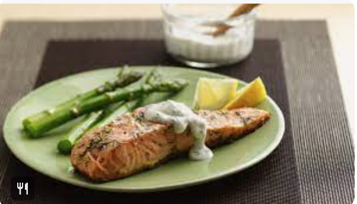

Salmon with Sour Cream Dill Sauce

This salmon with a sour cream dill sauce is a heathly, quick, and easy,
dinner that your family will love.
Ingredients
- Two 8oz salmon fillets
- Four tablespoons of sour cream
- One tablespoon dejion mustard
- Two teaspoons of dill divided
- One lemon
- Salt and pepper to taste
- One tablespoon of high temp oil. Canola, walnut, or avacado
- In a bowl mix sourcream, mustard, teaspoon dill, salt and pepper to taste. Chill
- Add a little oil to salmon then season with rest of dill, salt and pepper to taste
- Turn in stove to medium high heat, place oil in non-stick pan to oil shimmers
- Place salmon skin side down and cook salmon 75% this way. Then flip and cook to 125ºF/50º internal temp. Rest five minutes.
- Plate salmon and sauce squeeze lemon to taste.
- Enjoy!
Retuen Home